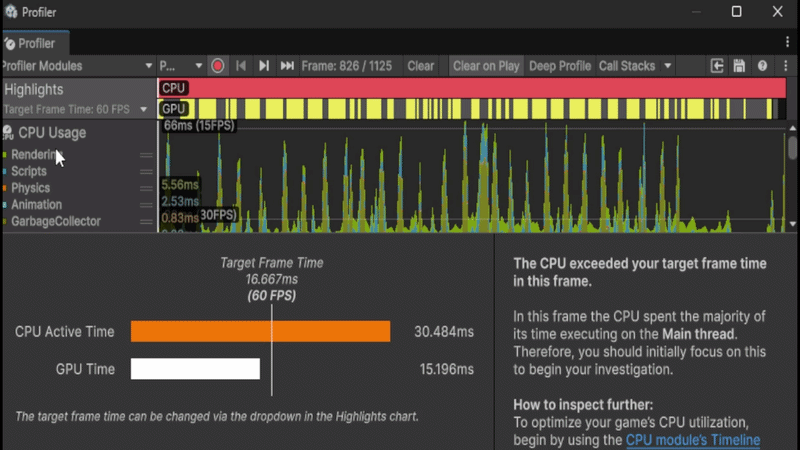

A destructible voxel horror game inside a living organism. I made the terrain playable at scale and built editor tools so the team could shape it into levels.
A finished environment shows the density and visual target the voxel system had to support.
Project at a glance
Role
Technical Designer
Team size
8
Engine / tools
Unity, C#, compute shaders
Duration
3 months · summer project
Focus
Voxel destruction, rendering and physics, level tooling
Platform
PC
What I Owned
I built the destructible flesh terrain and its GPU and CPU update paths, developed omnidirectional controls and gathering mechanics, and made the Chunk Grid Baker workflow for authoring and baking level layouts.
Featured work
Three selected parts of my work on In the Flesh.
01 / Featured work
Making a dense world destructible
The design asked players to drill through flesh, uncover organs, and open new routes as their jaws grew. A dense field of individual blocks made that interaction possible, but treating every block like a regular scene object was too expensive.
The terrain iteration footage shows the environment being built toward a destructible play space.
Watch on YouTube
Drilling through the voxel wall shows the core interaction and how damage opens a route through the environment.
I kept each voxel as lightweight state for damage, scale, and visual condition, while sharing its static mesh data. The terrain can respond locally to drilling without making every block carry a full object pipeline.
02 / Featured work
Splitting the work between rendering and physics
Rendering thousands of changing blocks and rebuilding their colliders at the same frequency caused two different bottlenecks. Solving one side alone would still leave drilling vulnerable to frame spikes.
The system diagram shows why block state, GPU rendering, and CPU collider work are handled separately.

The profiler during drilling shows the runtime cost of the terrain update while the player breaks blocks.
I moved visual instance assembly to a compute shader and indirect instancing, grouped by damage state. On the CPU, dirty chunks defer collider rebuilding to a refresh interval. Shared mesh data and unloading mined chunks keep the world state lighter.
03 / Featured work
Turning the system into a level workflow
A terrain system is only useful to level designers if they can place, inspect, and revise it without rebuilding rooms by hand. I made the Chunk Grid Builder and baking flow expose grid dimensions, previews, commit, clear, and prefab bake controls in the Unity editor.
The committed grid shows the authored layout produced by the editor workflow.
The bake pass saves generated meshes as persistent assets and reuses matching geometry instead of writing duplicates. That lets the team iterate on room layouts in the editor and commit a reusable result for play.
Supporting contributions
Omnidirectional player controls
Drill gathering mechanic
Timed slider upgrade minigame
Block damage interpolation
Automatic cleanup of mined chunks
Project takeaway
In the Flesh taught me to treat authoring cost and runtime cost as one design problem. The destruction fantasy needed both a cheaper update path and a workflow that let someone build levels with it.
Gallery & development material
The trailer places the destructible environment in the full game context.
Watch on YouTube
The gameplay clip shows the movement and growth loop surrounding the terrain system.
Watch on YouTube
The editor clip shows the authoring workflow beyond the still screenshots.
Watch on YouTube